This appendix records the test suite as it exists in the repository and as it behaves when executed. Figures C.1 to C.3 show the shared framework; C.4 to C.14 show each of the eleven suite files in turn; C.15 to C.19 show the two runs and their results; C.20 to C.23 show the test management tool; C.24 shows the published repository.
The complete source is published at https://github.com/reeneshzn/emergex-group-55.
| Figures | Subject | What it demonstrates |
|---|---|---|
| C.1 – C.3 | Framework | Structure, the Page Object Model, shared fixtures |
| C.4 – C.14 | The eleven suite files | 152 test functions across seven levels |
| C.15 – C.19 | Execution | TR-001 and TR-002, and running one level alone |
| C.20 – C.23 | BeyondTheBugs | Cases, runs, per-run results |
| C.24 | Repository | Everything version-controlled together |
Playwright and pytest are the tools. The framework is the structure built on top of them: the three files below contain no tests themselves, and everything in C.4 to C.14 depends on them.

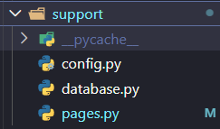

Figure C.1 — The test suite in the repository. The seven layer folders correspond to the test levels in Table 5.3.1; support holds the framework; TestCases holds the sixty case specifications and both run records.
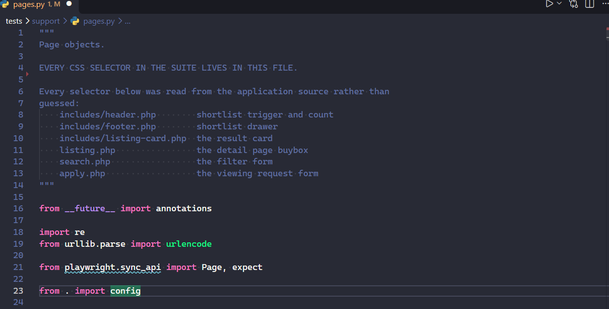
Figure C.2 — The Page Object Model. Every CSS selector in the suite is declared in this one file, and each was read from the named application source rather than guessed, so a markup change is one edit here instead of a search across eleven test files.
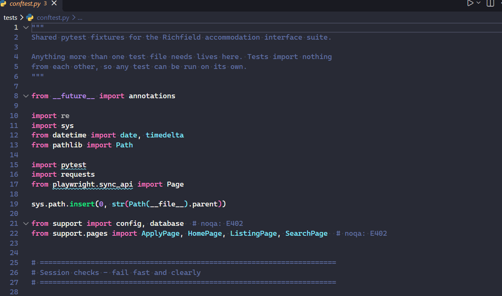
Figure C.3 — Shared fixtures. The session check stops the whole run with one clear message when the application is unreachable, rather than letting the browser tests fail individually with a confusing navigation error and the real cause buried a hundred lines down.

Figure C.4 — 00-smoke/test_smoke.py, 15 functions. Runs before anything else: every page must return 200, the expected tables must exist, and the seed must have loaded. About ten seconds, so a dead environment is found immediately rather than after six minutes of misleading skips.
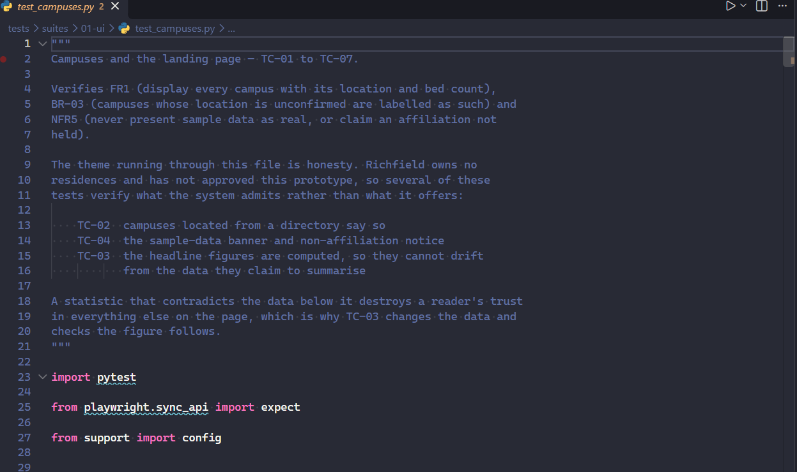
Figure C.5 — 01-ui/test_campuses.py, 15 functions (TC-01 to TC-07). Includes the test that changes a bed count and requires the displayed total to move, which distinguishes a computed figure from a hardcoded one that happens to be correct.
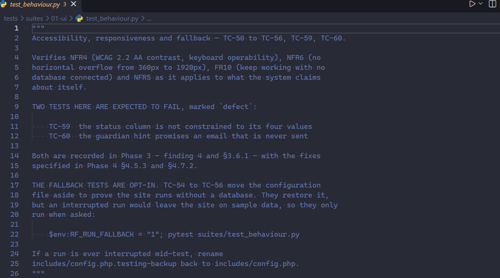
Figure C.6 — 01-ui/test_behaviour.py, 13 functions. Overflow is checked at seven viewport widths by comparing scrollWidth against clientWidth, which is a measurement rather than a judgement about a screenshot.
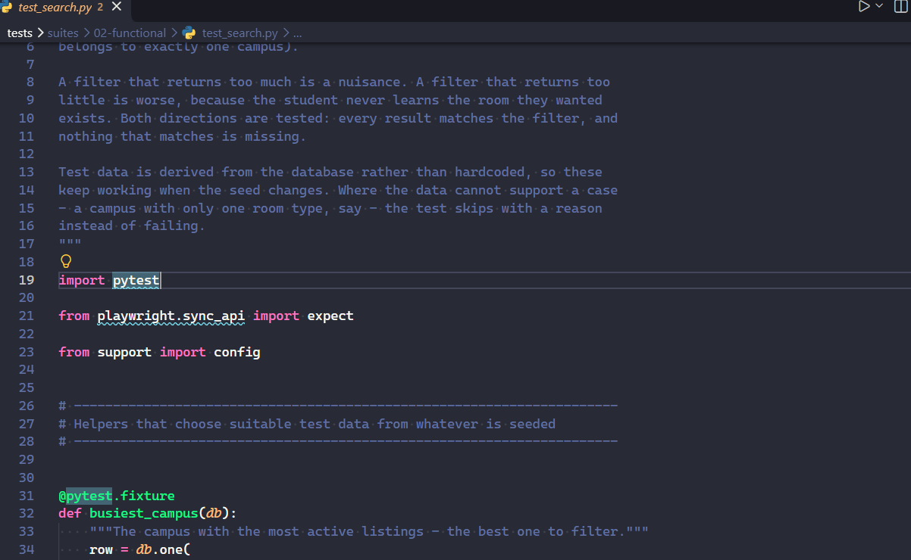
Figure C.7 — 02-functional/test_search.py, 17 functions (TC-08 to TC-13). Filtering is verified in both directions: every result belongs to the chosen campus, and every row that should appear does appear.
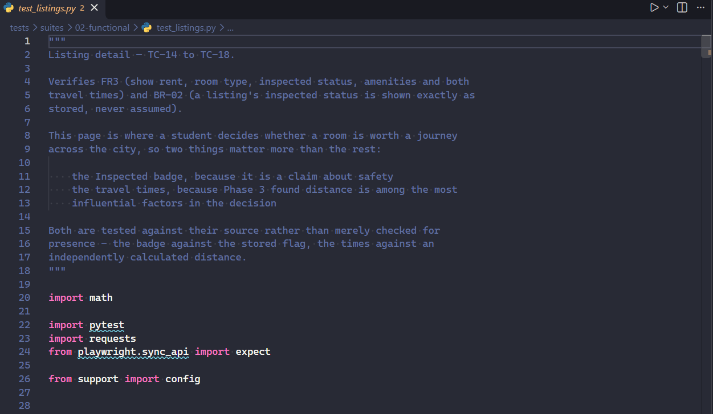
Figure C.8 — 02-functional/test_listings.py, 14 functions (TC-14 to TC-18). The suite implements the haversine calculation independently and compares its own answer with the page's, rather than trusting the application's arithmetic by reading it back.
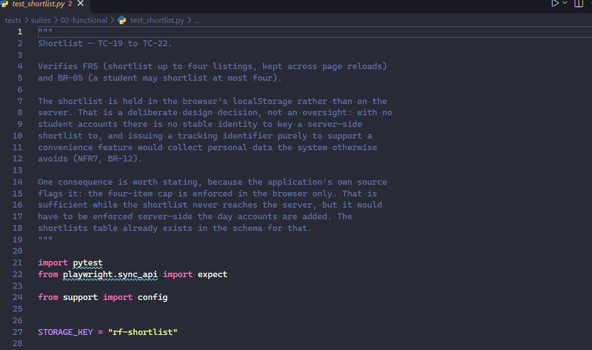
Figure C.9 — 02-functional/test_shortlist.py, 10 functions (TC-19 to TC-21). The four-room limit is asserted as the application implements it: the control is disabled and explains why, rather than the click being refused.
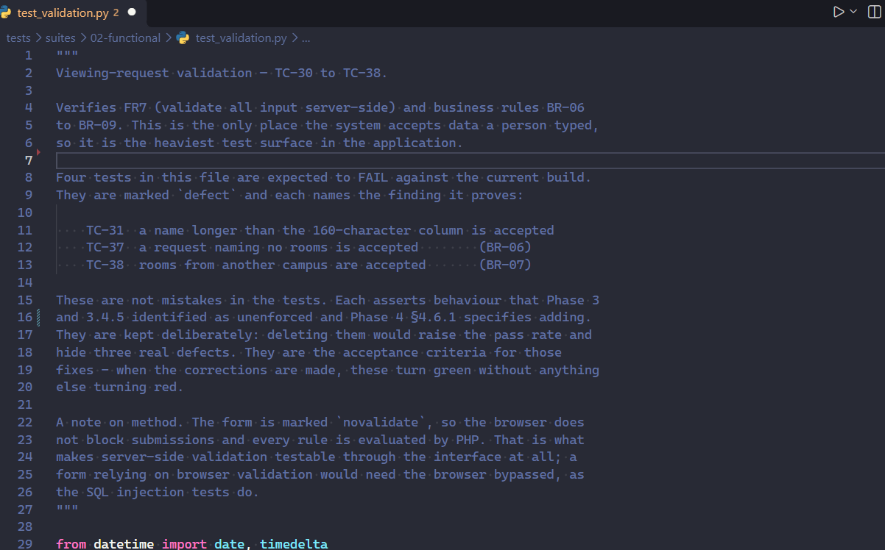
Figure C.10 — 02-functional/test_validation.py, 21 functions (TC-30 to TC-38). The largest file, and the one that found DEF-01, DEF-02 and DEF-03. Every rule is tested from both sides, since a suite that only tests refusals would pass against a form that refuses everything.
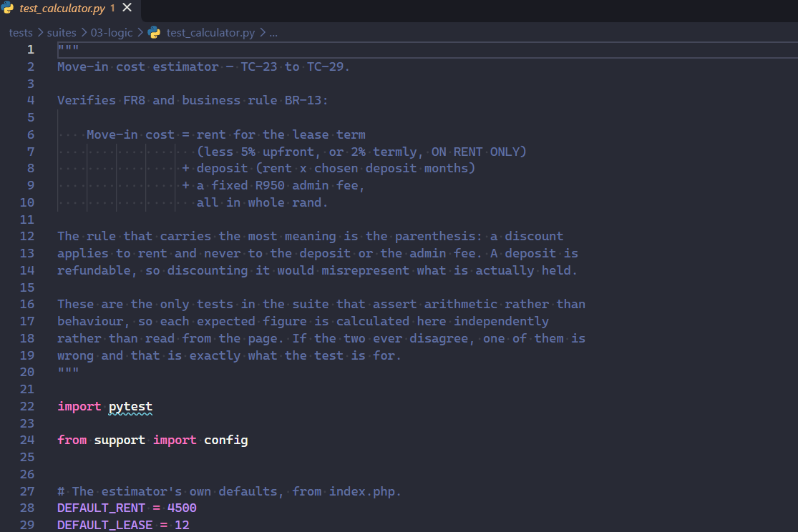
Figure C.11 — 03-logic/test_calculator.py, 13 functions (TC-23 to TC-29). The deposit is read under all three payment plans and required to be identical, which proves the discount never reaches it whatever the rent is.
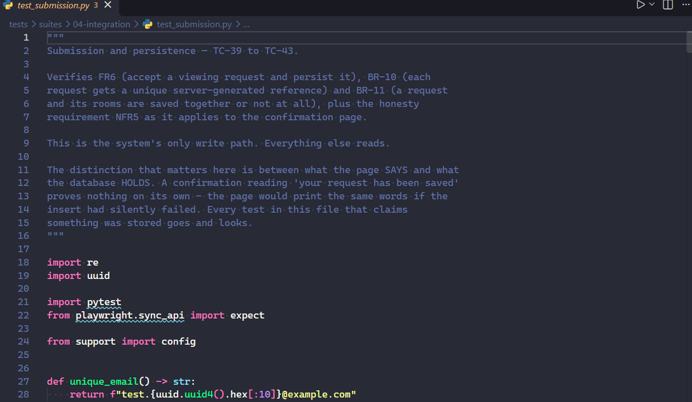
Figure C.12 — 04-integration/test_submission.py, 14 functions (TC-39 to TC-43). Assertions run against MySQL rows, not screen text: a confirmation page would print the same words whether or not the insert succeeded.
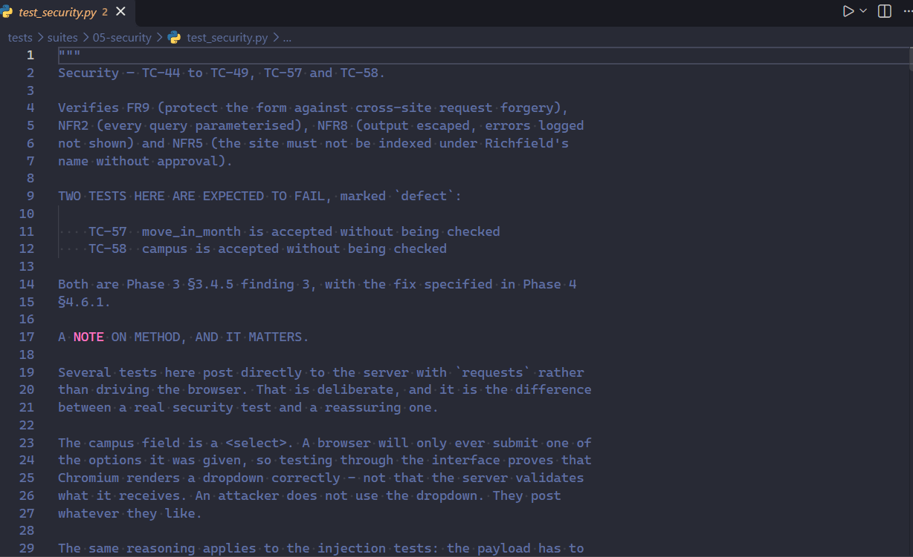
Figure C.13 — 05-security/test_security.py, 15 functions (TC-44 to TC-49, TC-57, TC-58). These post directly with requests rather than driving the browser, which is how DEF-04 and DEF-05 were found: both fields are dropdowns, so no amount of clicking could have reached them.
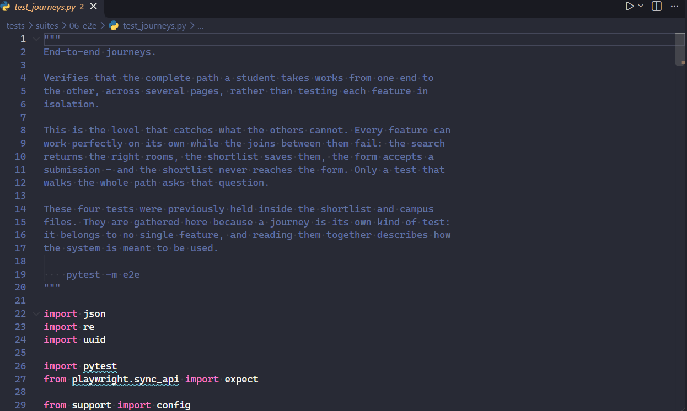
Figure C.14 — 06-e2e/test_journeys.py, 5 functions. Every step is covered individually elsewhere; these exist because covering each step does not prove the path works, and the path is what a student uses.

Figure C.15 — Execution in progress. Each line is one of the 230 executions produced by the suite's 152 test functions.

Figure C.16 — The closing summary: 224 passed, 6 skipped, none failed. The six skips are the fallback cases TC-54 to TC-56, which move the application's configuration file aside and are therefore opt-in rather than part of an ordinary run.
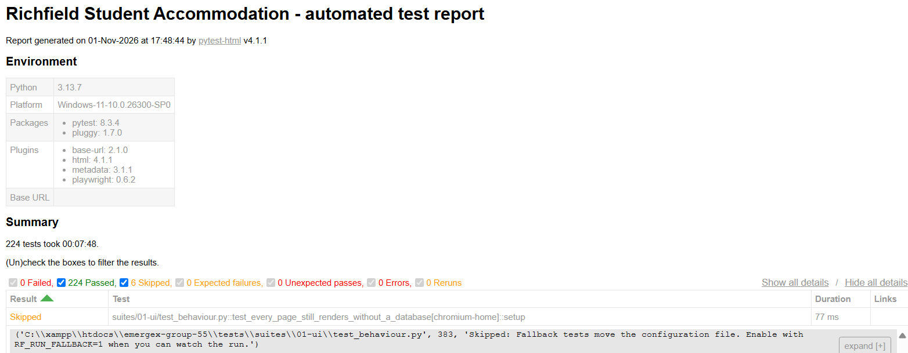
Figure C.17 — The archived TR-002 report, generated by pytest on 1 November 2026: 224 passed, 0 failed, 6 skipped in 7 minutes 48 seconds. The title reads "Richfield Student Accommodation" because that was the application's name when the run was executed; it was renamed to EMERGEX afterwards, and the archived report has deliberately not been edited.
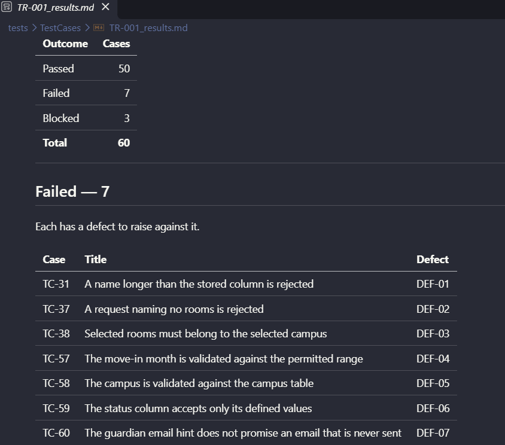
Figure C.18 — The TR-001 record: 50 passed, 7 failed, 3 blocked, with each failure mapped to the defect raised against it. TR-001's own generated HTML report is not reproduced here because the artefacts archived under that name were written by the aborted first attempt described in section 5.4.3, which collected no tests; this record, written at the time of the run, is the authoritative evidence for it.
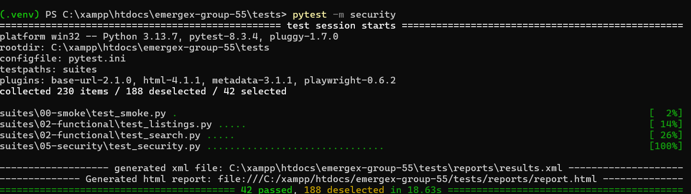
Figure C.19 — One test level executed alone: 230 collected, 188 deselected, 42 selected. The selected tests come from four different files, because the level is a marker on each test rather than a folder — a security test living in the search file is still run as part of the security layer. The 42 here are executions of the 19 security test functions in Table 5.3.1, the difference being parameterisation.
Available at https://beyondthebugs.netlify.app/ — select Open Tool. No sign-in required.
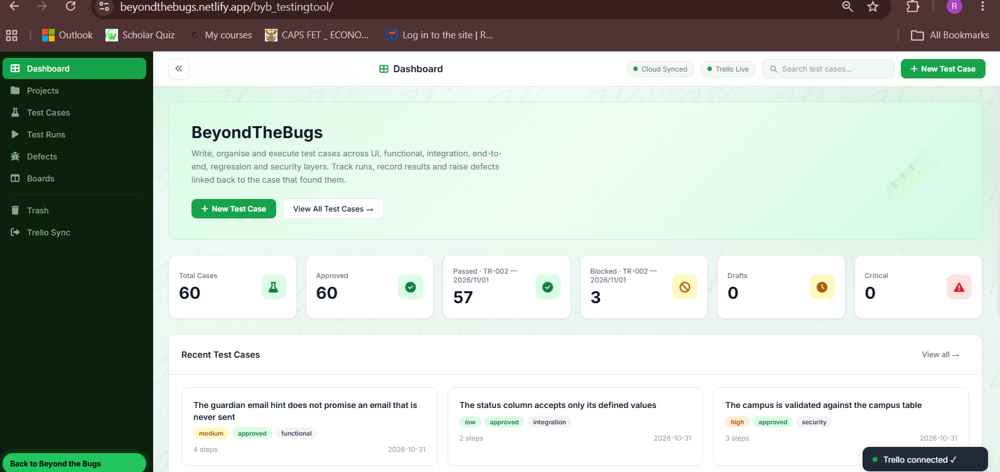
Figure C.20 — The dashboard. The outcome figures are read from the most recent run rather than from the cases, because pass, fail and blocked belong to a run and not to a specification.
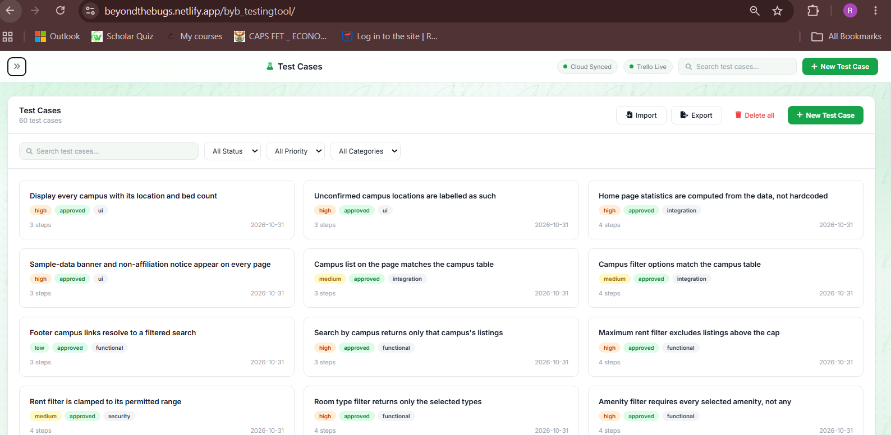
Figure C.21 — The sixty test cases, each carrying the requirement it verifies.

Figure C.22 — A single case specification, with its preconditions, numbered steps and expected result. The case holds one lifecycle status; the result of running it belongs to a run.

Figure C.23 — Both runs recorded separately. TC-37 is held once as a specification, failed in TR-001 and passed in TR-002 — three separate facts, none overwriting another.

Figure C.24 — The published repository at https://github.com/reeneshzn/emergex-group-55. The application, the automated test suite and all documentation are version-controlled together.